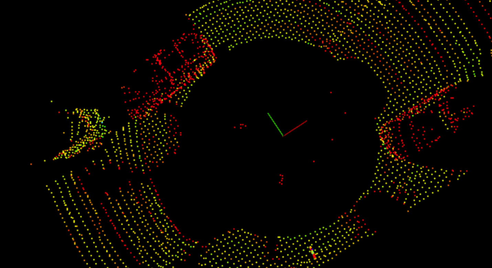

<!-- Truncated above -->
<section class="about section" id="about">
  <div class="container">
    <div class="section-header">
      <h3 class="title" data-title="Project">Advanced Lidar Perception Pipeline</h3>
    </div>

    <div class="section-body grid-2">
      <div class="column-9">
        <h3 class="title-sm">August 2022 – December 2022</h3>
        <p class="text">
          • Engineered a full obstacle detection pipeline using raw Lidar PCD files with custom filtering, plane segmentation,
          Euclidean clustering, and bounding box generation, achieving real-time frame-wise object detection at 10+ FPS.
          <br><br>
          • Implemented voxel grid downsampling and region-based ROI filters, reducing point cloud data size by up to 85%
          without compromising obstacle fidelity.
          <br><br>
          • Designed from-scratch RANSAC and KD-Tree-based Euclidean clustering algorithms to segment road and dynamic
          obstacles, enabling clear separation and ID of nearby vehicles and objects.
          <br><br>
          • Developed a PCD streaming architecture using Boost filesystem to continuously visualize and process sequences
          of 100+ Lidar frames, simulating autonomous vehicle Lidar feeds in urban scenes.
          <br><br>
          • Proposed and initiated object tracking across frames using proximity-based data association, laying groundwork
          for multi-frame trajectory estimation and robust dynamic object understanding.
        </p>

      
      </div>
    </div>
  </div>
</section>
